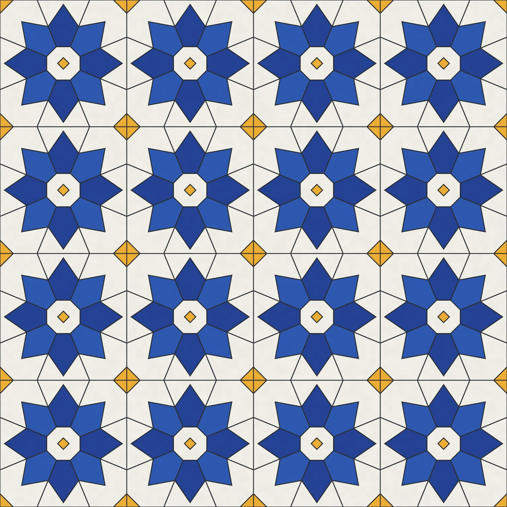
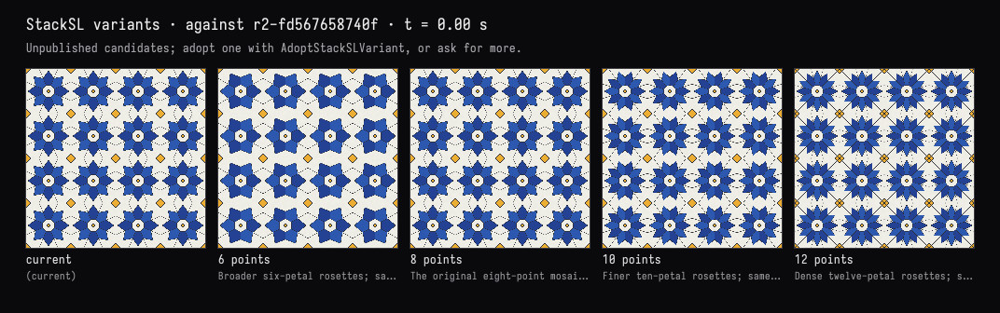

Field · AI4 / Zellige tiles / turn 02
Six, eight, ten or twelve points
The recorded exchange: the request, the tool activity, every image the tools returned to the model, and its reply. Expand tool activity to read the steps; open an image to see it full size.
You
Before we settle on eight: show me what the rosettes look like with 6, 8, 10 and 12 points, side by side.
Tool activity · 5 steps
Starting AI conversation
InspectStackSLStudy finished (2 ms)
CaptureRenderWindowRequest finished (43 ms)
TryStackSLVariants finished (2004 ms)
Completed


AI4 · gpt-6-astra / openai
Shown side by side above: 6, 8, 10, and 12 points, after the “current” reference.
- 6: broader, simpler petals with more white space.
- 8: balanced stars that fit the square grid naturally.
- 10: finer, more flower-like rosettes.
- 12: denser, intricate starbursts with more grout detail.
All four previews passed checks and remain still. The live eight-point pattern is unchanged.